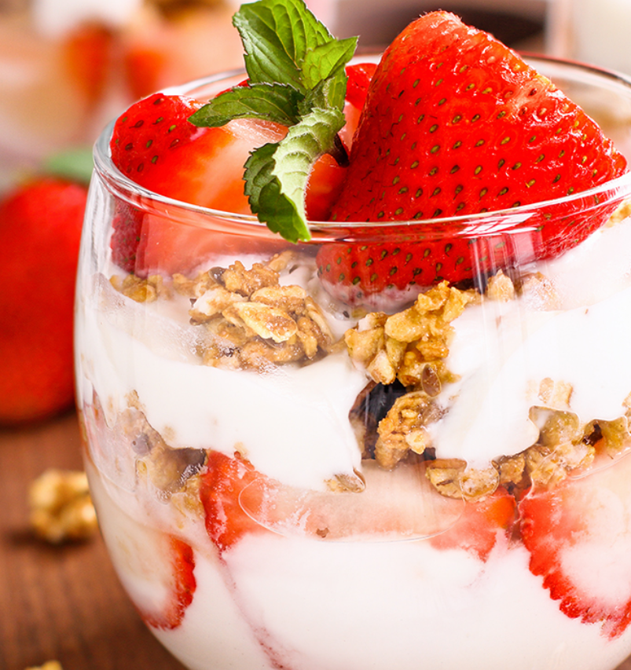

Cambie a leche o yogur bajos en grasa o sin grasa (o versiones lácteas sin lactosa o con soja fortificada).
¿Qué alimentos se incluyen en el grupo de los lácteos?
El grupo de lácteos incluye leche, yogur, queso, leche sin lactosa, leche de soya y yogur fortificados. No incluye alimentos elaborados con leche con bajo contenido de calcio y alto contenido de grasa. Ejemplos de estos son el queso crema, la crema agria, la crema y la mantequilla.
¿Cuánta cantidad de alimentos del grupo de los lácteos se necesita diariamente?
Tus necesidades de lácteos dependen de tu edad, sexo, altura, peso y nivel de actividad física. La cantidad también puede variar si estás embarazada o en período de lactancia.
Aproximadamente el 90 % de los estadounidenses no consume suficientes lácteos. La mayoría de las personas se beneficiaría de consumir más lácteos descremados o bajos en grasa. Estos pueden provenir de la leche, el yogur o el queso. También pueden provenir de la leche sin lactosa y la leche de soya o el yogur fortificados.
Encuentra la cantidad adecuada para ti con tu Plan MiPlato. Para obtener una guía general por edad, consulta la tabla a continuación.
¿Qué cuenta como una taza en el grupo de productos lácteos?
1 taza de leche, yogur o leche de soja
1 ½ onzas de queso natural
La siguiente tabla enumera cantidades específicas que cuentan como 1 taza de verduras para su consumo recomendado.
Más sobre el Grupo Lácteo
Nota: Haga clic en la fila superior para ampliar la tabla. Si usa un dispositivo móvil, es posible que deba girarlo para ver la tabla completa.
*Estas son recomendaciones generales por edad. Encuentra la cantidad adecuada para ti consultando a tu médico.
Recomendaciones diarias*
Edad
Cantidad
Niños pequeños
12 a 23 meses
1⅔ a 2 tazas
Niños
2-3 años
2 a 2½ tazas
4-8 años
2½ tazas
Chicas
9-13 años
3 tazas
14-18 años
3 tazas
Niños
9-13 años
3 tazas
14-18 años
3 tazas
Mujeres
19-30 años
3 tazas
31-59 años
3 tazas
60+ años
3 tazas
Hombres
19-30 años
3 tazas
31-59 años
3 tazas
60+ años
3 tazas
Cantidad que cuenta como 1 taza de verduras
Leche
1 taza de leche
1 envase de media pinta de leche
½ taza de leche evaporada
1 taza de leche de soja fortificada con calcio
1 envase de media pinta de leche de soja fortificada con calcio
Yogur
1 taza de yogur (lácteo o de soja fortificado)
Queso
1 ½ onzas de queso duro (cheddar, mozzarella, suizo, parmesano)
⅓ taza de queso rallado
1 onza de queso procesado (americano)
½ taza de queso ricotta
2 tazas de requesón
2 onzas de queso fresco
2 rebanadas de queso blanco
¿Por qué es importante comer o beber productos lácteos?
Comer o beber productos lácteos ofrece beneficios para la salud, como fortalecer y mantener huesos fuertes. Los alimentos del grupo de los lácteos aportan nutrientes vitales para la
salud y el mantenimiento del cuerpo. Estos nutrientes incluyen calcio, potasio, vitamina D y proteínas
Calcio y salud ósea
Los productos lácteos son una fuente excelente de calcio, un mineral esencial para el desarrollo y mantenimiento de huesos y dientes fuertes. Consumir suficiente calcio ayuda a prevenir la osteoporosis y otras enfermedades óseas.
Proteínas de alta calidad
La leche, el yogur y el queso contienen proteínas completas que aportan todos los aminoácidos esenciales. Estas proteínas son importantes para el crecimiento muscular, la reparación de tejidos y el buen funcionamiento del cuerpo.
Vitaminas esenciales
Los lácteos aportan vitaminas como la vitamina D, B12, A y riboflavina. La vitamina D ayuda a absorber el calcio, mientras que la B12 es clave para la formación de glóbulos rojos y la función del sistema nervioso.

Beneficios para la salud
Todas las elecciones de comida y bebida importan. Concéntrese en la variedad, la cantidad y la nutrición.
El calcio y la vitamina D son nutrientes importantes a cualquier edad. Consumir o beber productos lácteos con estos nutrientes ayuda a:
Mejorar la salud de los huesos, especialmente en niños y adolescentes cuando se está construyendo masa ósea.
Promover la salud ósea y prevenir la aparición de osteoporosis en adultos.